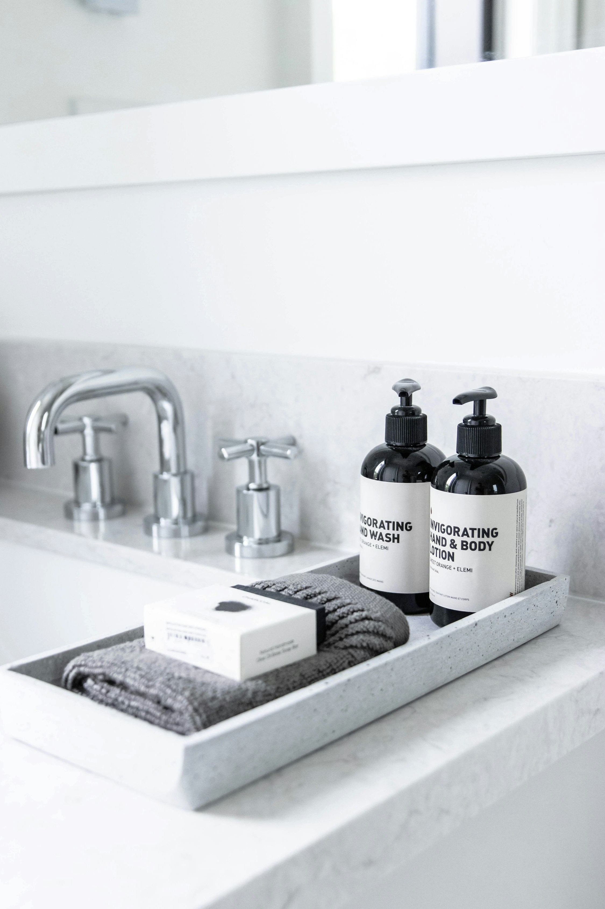
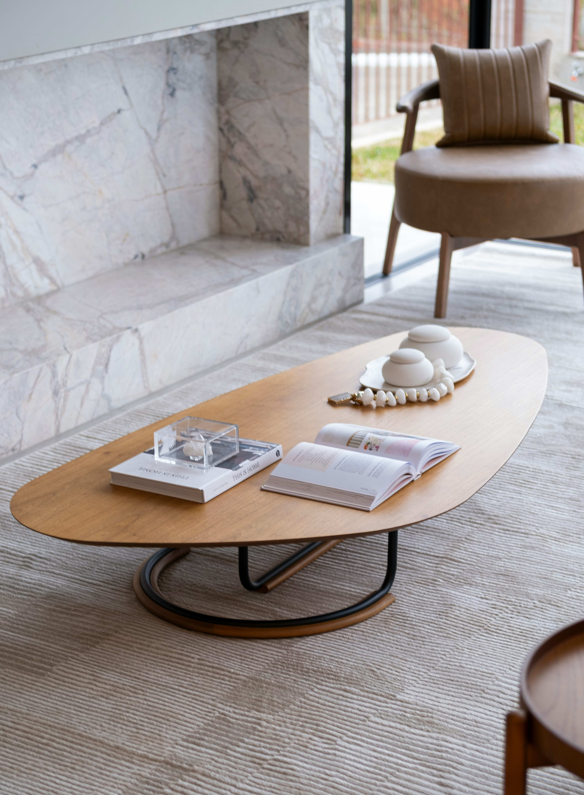
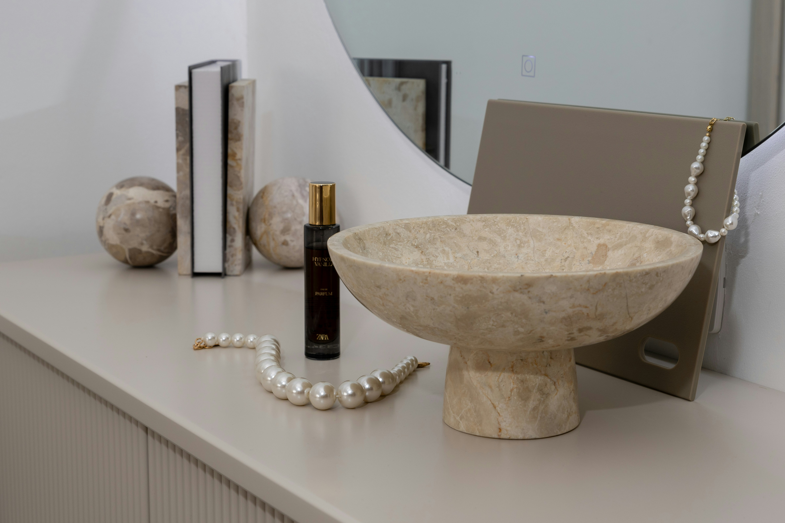
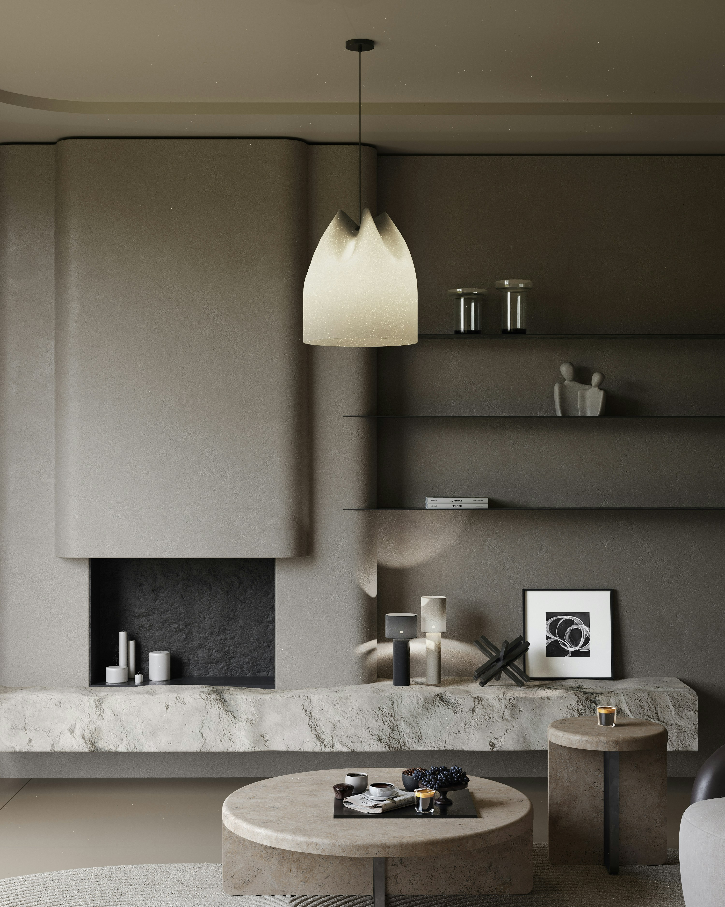
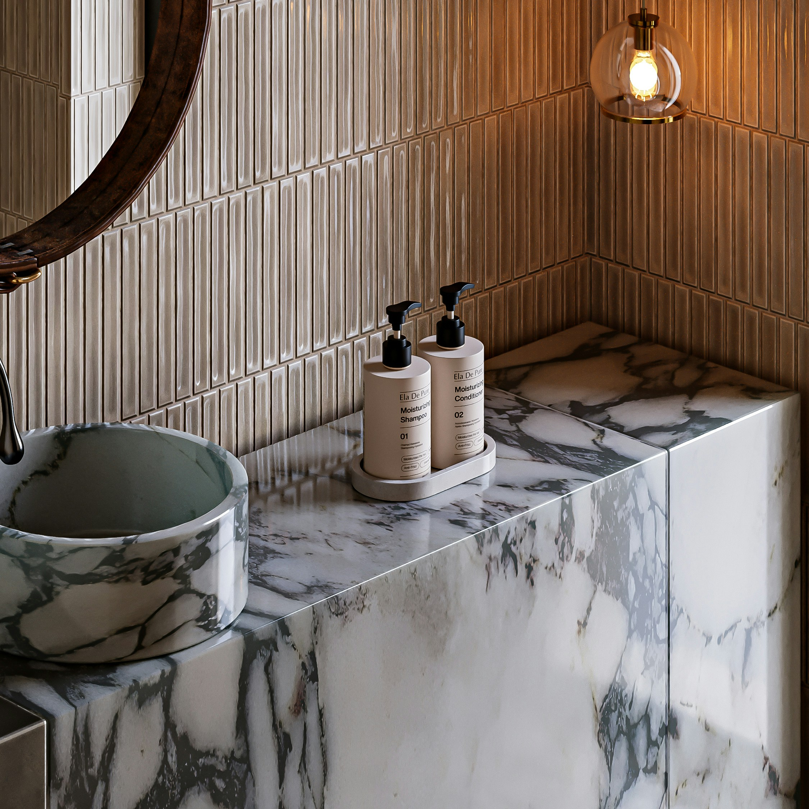
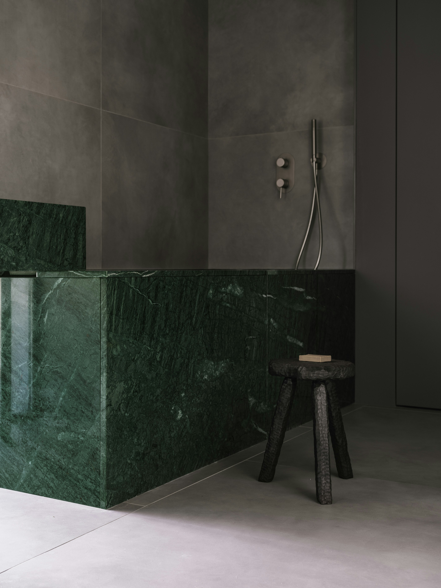
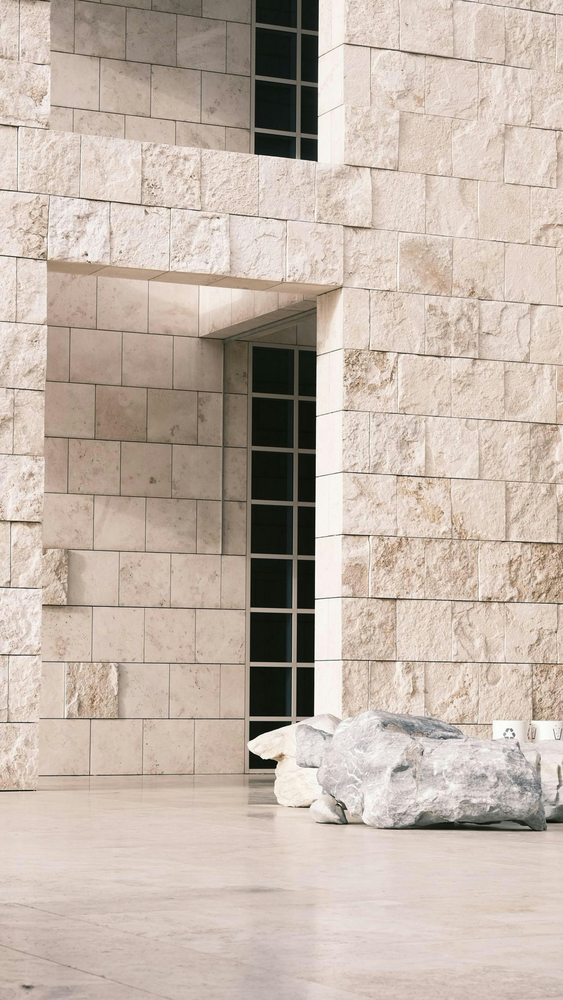

Jednostavni pladanj od kamena na mramornoj ploči kao prekrasan dodatak u kupaonici

Kamin izrađen od Carrara mramora u dnevnom boravkuUmivaonik izrađen od mramora u kupaoniciUmivaonik izrađen u jednom komadu od mramora u kupaoniciKameni umivaonik izrađen u jednom komadu od mramora u kupaonici

Kuhinjska ploča izrađena od mramora

Kamin i stolic od mramora izrađeni po mjeri kao dodatak u dvenom boravku

Kupaonski pult i umivaonik izrađeni od istog mramora kako bi bili savršeno usklađeni u kupaonici

Kupaonska kada izrađena od zelenog mramora

Vanjski zidovi obloženi kamenim blokovima i poliranim kamenim podom